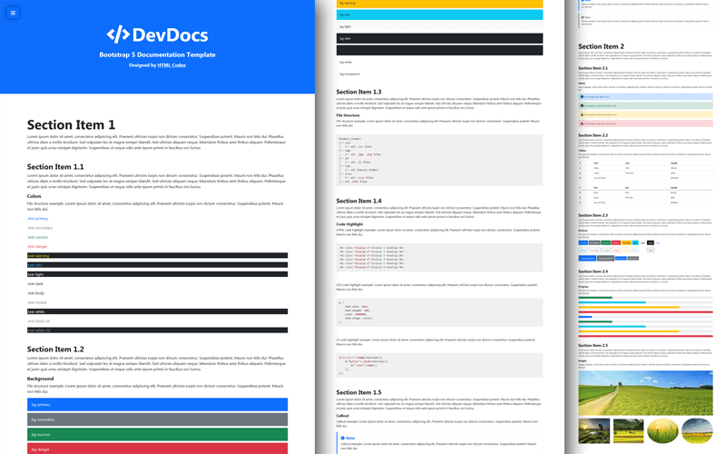

Badge
Pill Badge
A rounded pill label for statuses, counts and categories. Ships in blue, sky and neutral variants.
A clean, framework-free documentation site and API reference. Everything you need to ship beautiful developer docs — no build step required.
DocuKit gives you a complete documentation site out of the box — a sticky sidebar, a content column, a mini table of contents, and beautifully styled code blocks. Built with semantic HTML5, CSS custom properties, and vanilla JavaScript.
Every section is anchored, every code block is copy-ready, and the whole layout adapts from a large desktop monitor down to a phone. No frameworks, no dependencies, no build tools.
index.html and go.
📷 DocuKit renders a full docs site with sidebar navigation, syntax-highlighted code and an API table.
Clone the template, open it in your editor, and start writing. Here is the fastest way to get a local preview running:
# clone the template
git clone https://github.com/uiuxlabz/docukit.git
cd docukit
# serve it locally
npx serve . -l 3000
# open http://localhost:3000Install DocuKit with your package manager of choice. Because it is framework-free, you only copy two files — style.css and main.js — into your project.
npm install docukityarn add docukitpnpm add docukitnpx docukit init my-docs
cd my-docs
npx docukit devassets/css/style.css and drop it in — the template works with a plain link tag and one script tag.Wire up the stylesheet and script, then write your sections. The sidebar, mini-TOC and search all activate from a few lines of markup.
<head>
<link rel="stylesheet" href="assets/css/style.css">
</head>
<body>
<!-- … docs layout … -->
<script src="assets/js/main.js"></script>
</body>Give each section an id, then link to it from the sidebar. DocuKit keeps the active link in sync as you scroll.
<aside class="docs-sidebar">
<a href="#installation" class="docs-nav-link">Installation</a>
<a href="#components" class="docs-nav-link">Components</a>
</aside>
<main>
<section id="installation"> <!-- … --> </section>
<section id="components"> <!-- … --> </section>
</main>Behavior is controlled through data-* attributes, so there is no config file to maintain.
// options passed via data attributes
const docukit({
sidebar: 'sticky', // sticky | overlay | off
search: true, // sidebar filter on keyup
toc: 'right', // right mini table of contents
smooth: true // animated anchor scrolling
})id values break sidebar highlighting and mini-TOC links.A small library of ready-made UI components. Each one ships as markup plus a few classes — copy the snippet, drop in your content, done.
A rounded pill label for statuses, counts and categories. Ships in blue, sky and neutral variants.
A circular avatar with status ring, initials fallback and a 24px to 96px size scale.
A soft-cornered surface for grouping content, with hover elevation and optional media header.
A fixed-ratio image thumbnail with lazy loading, zoom-on-hover and a caption strip.
<span class="tag blue">New</span>
<span class="tag sky">v2.4.0</span>
<span class="tag">14 components</span>The layout is fluid at every size. The sidebar sticks on desktop, collapses to an overlay drawer on tablet, and the whole page stacks on phones — all driven by two breakpoints.
> 1180px
Sticky sidebar, content column and a right-hand mini table of contents.
721 – 980px
Sidebar collapses to an overlay drawer opened from the TOC button.
≤ 720px
Everything stacks to a single column; search wraps to its own row.
The template uses a 12-column mental grid. This demo shows common spans — resize the window to watch them reflow.
clamp(), so nothing jumps between breakpoints — it scales smoothly instead.Every color, font and spacing value is a CSS custom property. Override the tokens in :root and the whole template restyles itself — no class surgery.
:root {
--slate: #1E293B;
--blue: #2563EB;
--sky: #0EA5E9;
--gray: #64748B;
--code: #0F172A;
--font-heading: 'Sora', sans-serif;
--font-body: 'IBM Plex Sans', sans-serif;
}Headings use Sora (600/700); body copy uses IBM Plex Sans (400/500). The scale is fluid, driven by clamp().
Every endpoint is available under https://api.docukit.dev/v2. Authentication uses a bearer token in the Authorization header.
| Method | Endpoint | Description | Auth |
|---|---|---|---|
| GET | /docs |
List all documentation sections | ✓ optional |
| GET | /docs/:slug |
Fetch a single section by slug | ✓ optional |
| POST | /docs |
Create a new documentation section | 🔒 required |
| PUT | /docs/:slug |
Replace an existing section entirely | 🔒 required |
| DELETE | /docs/:slug |
Remove a section and its versions | 🔒 required |
| GET | /search?q=grid |
Full-text search across all docs | ✓ optional |
curl https://api.docukit.dev/v2/docs \
-H "Authorization: Bearer <token>" \
-H "Accept: application/json"{
"status": "ok",
"data": [
{
"slug": "installation",
"title": "Installation",
"updated": "2026-08-30",
"views": 12403
}
],
"pagination": { "page": 1, "limit": 20 }
}Authorization header to raise this to 1,000.DocuKit is built to be usable by everyone. The markup is semantic, interactive elements are keyboard-friendly, and motion is optional.
prefers-reduced-motion disables reveal animations and smooth scrolling.aria-labels, aria-expanded toggles and descriptive alt text on every image.@media (prefers-reduced-motion: reduce) {
html { scroll-behavior: auto; }
.reveal { opacity: 1; transform: none; }
}